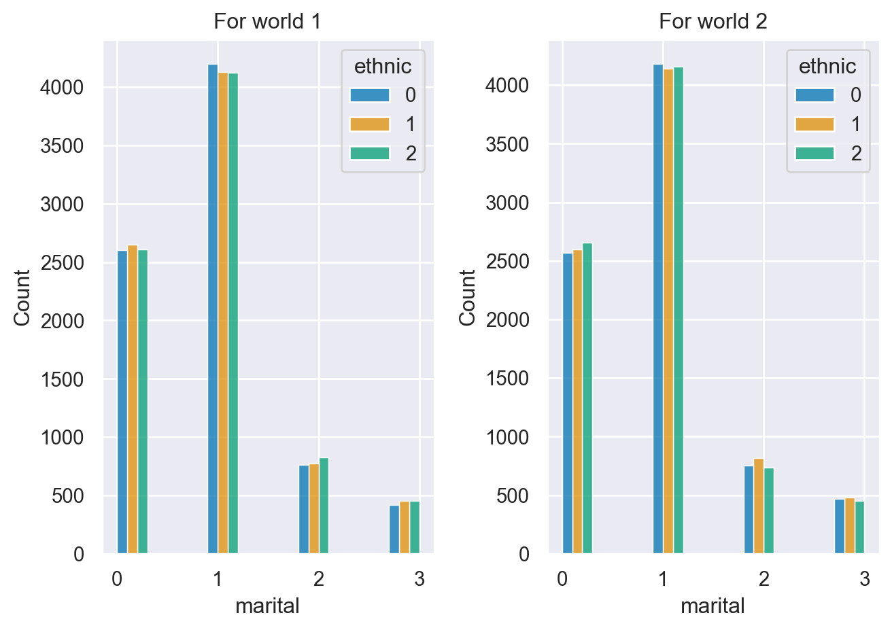

import numpy as np
import pandas as pd
import matplotlib.pyplot as plt
import seaborn as sns
import rfit
import scipy.stats as stats
sns.set(style='darkgrid')Utopian World
Let’s import the required libraries
Importing dataset for both the worlds
world1 = rfit.dfapi('World1', 'id')
world1.to_csv("world1.csv")
# world1 = pd.read_csv("world1.csv", index_col="id") # use this instead of hitting the server if csv is on local
world2 = rfit.dfapi('World2', 'id')
world2.to_csv("world2.csv")
# world2 = pd.read_csv("world2.csv", index_col="id") # use this instead of hitting the server if csv is on local
print("\nReady to continue.")Dataframe from Regression.Fit API is loaded.Dataframe from Regression.Fit API is loaded.
Ready to continue.Question
Two Worlds
I was searching for utopia, and came to this conclusion: If you want to do it right, do it yourself. So I created two worlds.
Data dictionary:
- age00: the age at the time of creation. This is only the population from age 30-60.
- education: years of education they have had. Education assumed to have stopped. A static data column.
- marital: 0-never married, 1-married, 2-divorced, 3-widowed
- gender: 0-female, 1-male (for simplicity)
- ethnic: 0, 1, 2 (just made up)
- income00: annual income at the time of creation
- industry: (ordered with increasing average annual salary, according to govt data.)
- leisure n hospitality
- retail
- Education
- Health
- construction
- manufacturing
- professional n business
- finance
- leisure n hospitality
Please do whatever analysis you need, convince your audience both, one, or none of these worlds is fair, or close to a utopia. Use plots, maybe pivot tables, and statistical tests (optional), whatever you deem appropriate and convincing, to draw your conclusions.
There are no must-dos (except plots), should-dos, cannot-dos. The more convenicing your analysis, the higher the grade. It’s an art.
Answer
Defining Utopia
The definition of utopia is very subjective and hence before diving into the plots, I would define my definition of utopia. Personally for me, utopia is a place where the following conditions are satisfied
- Equal pay scale irrespective of the industry(Clearly not satisfied for both the worlds) (Figure 1)
- Equal pay for all irrespective of
- Equal Job Opportunities (Unity and Diversity)
- Equal education opportunities for both men and women.(Figure 5)
- Happy married life among people
Data Preprocessing
Summary of Dataset
#print(f"world 1 is : {world1.info()}\n")
#print(f"world 2 is : {world2.info()}")
#print(f"world 1 is : {world1.describe()}\n")
#print(f"world 2 is : {world2.describe()}")
print(f"World 1 data \n{world1.head()}")
print(f"World 2 data \n{world2.head()}")World 1 data
age00 education marital gender ethnic industry income00
id
0 51.965 17 0 1 0 5 76110.0
1 41.807 12 1 0 0 1 43216.0
2 36.331 12 1 0 1 3 52118.0
3 56.758 9 1 1 2 2 47770.0
4 31.051 14 0 0 0 0 34197.0
World 2 data
age00 education marital gender ethnic industry income00
id
0 34.629 12 0 0 2 4 52533.0
1 48.403 16 1 1 1 0 29507.0
2 50.327 14 1 1 2 7 122156.0
3 45.059 11 1 1 1 2 53249.0
4 59.616 16 0 1 0 4 75917.0Renaming the variables
Renaming variables
- age00 -> age
- income00 -> income
world1 = world1.rename(columns = {"income00": "income",
"age00":"age"})
world2 = world2.rename(columns = {"income00": "income",
"age00":"age"}) Data Analysis
1. Annual Income Division among various Industries
Checking whether the difference in annual income among industries is neglible
def comparison(x_var,y_var):
f, axes = plt.subplots(1, 2,sharex=True)
axes[0].set_title('For world 1')
sns.violinplot( x=x_var,y=y_var, data=world1,ax=axes[0])
axes[1].set_title('For world 2')
sns.violinplot( x=x_var,y=y_var, data=world2,ax= axes[1])
sns.despine(left=True)
plt.show()
comparison('industry','income')As mentioned in the question, there is a difference in annual income among various sectors. But as seen from the plots the difference is huge in both the worlds.
This doesn’t align with my definition of utopia. Reason : Each job/industry should be treated equally and hence, the pay scale should be same among all.
2. Equal Pay Distribution irrespective of Gender/Ethnicity
Both Gender or all three ethnic groups should have equal distribution of income for utopia. Reason : When the income distribution is irrespective of my gender/ ethnicity it would be close to idealistic world.
def kdePlot(x_var,hue_var,d1,d2):
"""
Kernel density plot for x_var for different categories of hue variable
Args:
x_var (numeric): income/age
hue_var (categorical): ethnicity/marital status/gender
d1 (dataset): plot on left side
d2 (datset): plot on right side
"""
f, axes = plt.subplots(1, 2,sharex=True)
axes[0].set_title('For world 1')
sns.kdeplot(x=x_var, hue=hue_var, data=d1,ax=axes[0], shade=True)
axes[1].set_title('For world 2')
sns.kdeplot(x=x_var, hue=hue_var, data=d2,ax=axes[1], shade=True)
def violen2var(x_var,y_var):
"""Violen Plot with two variables
Args:
x_var (categorical): gender/ethnicity
y_var (numeric): income/age
"""
f, axes = plt.subplots(1, 2,sharex=True)
axes[0].set_title('For world 1')
sns.violinplot( x=x_var,y=y_var, split=True, inner="quart", ax=axes[0], data=world1)
axes[1].set_title('For world 2')
sns.violinplot( x=x_var,y=y_var, split=True, inner="quart", ax=axes[1], data=world2)
sns.despine(left=True)
plt.show()A kernel density estimate (KDE) and violen plot to visualize the distribution of income based on Gender/Ethnicity.
violen2var("gender","income")
kdePlot('income','gender',world1,world2)violen2var("ethnic","income")
kdePlot('income','ethnic',world1,world2)The following conclusions can be drawn away from the above plots
World 1
- The distribution of income for both genders are different
- We need to check whether this difference is due to the industry that they work in(Since, each one is paying differently) or pay discrepancy based on Gender(within the industry itself)
World 2
- The distribution of income for both gender and ethnicity is almost similar for world 2
Finding the root cause of annual income difference based on the dataset
The difference could be because of following reasons :
- Pay Discrepancy in Industries based on gender/ ethnicity (Figure 4)
- Difference in education background of both the genders(Figure 5)
- Difference in Marital status distribution, since added responsibilities due to marital status could mean striving to get better job. (Figure 6)
- Age
- The difference in distribution of industry based on gender (Figure 8)/ethnicity (Figure 9)
- Gender ratio is different (Figure 7) Let’s try to plot and look out for the above reasons :
2.1 Pay Discrepancy in Industries based on Gender/Ethnicity
If the industries are paying unequally based on the gender/ ethnicity of a person, it wouldn’t be considered utopian.
def violenPlot(x_var,y_var,hue_var):
"""Violen Plot with x_var at x axis,y_var at y and color coded with hue_var
Args:
x_var (categorical)
y_var (numeric)
colr_var (categorical)
"""
f, axes = plt.subplots(1, 2,sharex=True)
axes[0].set_title('For world 1')
sns.violinplot(x=x_var, y=y_var, hue=hue_var, split=True, inner="quart", data=world1,ax=axes[0])
axes[1].set_title('For world 2')
sns.violinplot(x=x_var, y=y_var, hue=hue_var, split=True, inner="quart", data=world2,ax=axes[1])
plt.tight_layout()
plt.show()
def boxPlot(x_var,y_var,hue_var):
"""Box with x_var at x axis,y_var at y and color coded with hue_var
Args:
x_var (categorical)
y_var (numeric)
colr_var (categorical)
"""
f, axes = plt.subplots(1, 2,sharex=True)
axes[0].set_title('For world 1')
sns.boxplot(x =x_var,y = y_var,hue = hue_var,data=world1,ax=axes[0])
axes[1].set_title('For world 2')
sns.boxplot(x =x_var,y = y_var,hue = hue_var,data=world2,ax=axes[1])
plt.tight_layout()
plt.show()violenPlot('industry','income','gender')
boxPlot('industry','income','ethnic')- Observation for both worlds
-
- No difference in the income in each industry based on gender.
- No difference in the income in each industry based on ethnicity.
2.2 Checking Education background of the two Genders
Equal education opportunities should be given to all people irrespective of their gender and ethnicity. Also since the there is variation in income based on gender/ethnicity, we would like to see whether this variation is due to education or not.
def plotHist(x_var,hue_var):
"""Histogram with x_var on x axis and color coded by hue_var
Args:
x_var (catgorical/numeric)
hue_var (categorical)
"""
f, axes = plt.subplots(1, 2,sharex=True)
axes[0].set_title('For world 1')
# Create an array with the colors you want to use
#x="industry", hue="gender"
sns.histplot(data=world1, x=x_var, hue=hue_var,ax=axes[0],multiple='dodge',palette='colorblind',binwidth=0.3)
axes[1].set_title('For world 2')
sns.histplot(data=world2, x=x_var, hue=hue_var,ax=axes[1],multiple='dodge',palette='colorblind',binwidth=0.3)
plt.tight_layout()
plt.show()plotHist('education','gender')
plotHist('education','ethnic') As seen from above plots there is no issue of lack of education among gender and hence both the genders are getting equal education opportunities and are equally capable for both the worlds.
2.3 Checking Marital
The reason for considering marital status for unequal income distribution is because
- Since two people would be earning in an ideal world, they will have less pressure of taking a high paying job.
- Divorced/Widowed people might have a high pressure of getting a high paying job. Hence, it might affect the gender/ethnic composition among various industries
plotHist('marital','gender')
plotHist('marital','ethnic') 
- Observation
-
- Every marital status distribution is also similar among the two genders.
- Hence, the unequal distribution among industries is not due to any marital responsibilities among genders/ ethnic groups
For world 2, there are more percentage of gender 0(female) who are divorced/widowed
- Less number of people are divorced and widowed and hence that could mean that people are happy with there marriages.
2.4 Checking Age
The reason for checking age is
- As few industries might require experienced people for work and thus we would check age as well for this difference.
sns.swarmplot(x="industry", y="age", hue="gender", palette=["r", "c", "y"], data=world1)
plt.show()sns.swarmplot(x="industry", y="age", hue="ethnic", palette=["r", "c", "y"], data=world1)
plt.show()- Observation
- For different age groups we can observe the difference in ethnicity and gender. Hence, age is not the factor for this low participation of gender 0 and ethnicity 0/1 from the high paying industries.
2.5/3. Difference in distribution of industry based on Gender/Ethnicty
3.1 Checking Gender Ratio
Less population of gender 0(female), ethnic1 and ethnic 2 population can also result in this unequal distribution of income and hence we need to check that as well.
def countPlot(x_var):
"""Count plot with x_var on x axis
Args:
x_var (categorical): will plot the entries count corresponding to the particular category
"""
f, axes = plt.subplots(1, 2,sharex=True)
axes[0].set_title('For world 1')
sns.countplot(x=x_var,data=world1,ax=axes[0])
axes[1].set_title('For world 2')
sns.countplot(x=x_var, data=world2,ax=axes[1])
plt.tight_layout()
plt.show()
countPlot('gender')
countPlot('ethnic')- Observation
- As seen from the above plot the gender and ethnic ratio is well maintained in both the worlds and hence both worlds satisfy this condition. Also, income disparity based on gender/ethnicity is not justified by population density as well.
3.2 Checking Distribution of Industry based on Gender/Ethnic Group
plotHist('industry','gender')plotHist('industry','ethnic')- Observations
-
- Gender 0 (Females) are less likely to get a job in industry 4(construction), 6(Manufacturing) , 7(Finance) which have a high pay scale.
- Unequal distribution of ethnic group in different industries, high paying industries have more number of people with ethnicity = 2
- Conclusions
- Hence, we can find the following results
- For WORLD 1
- There is a unequal distribution of gender with same qualification among different industries.
- There is a unequal distribution of ethnicity with same qualification/marital status/education among various industries
- For World 2
- No such division based on gender and ethnicity is observed
Hypothesis Testing
#For testing our analysis we will subgroup our dataset for both worlds
#world1
#gender
gender0_w1 = world1[world1['gender'] == 0]
gender1_w1 = world1[world1['gender'] == 1]
#ethnic
ethnic1_w1 = world1[world1['ethnic'] == 0]
ethnic2_w1 = world1[world1['ethnic'] == 1]
ethnic3_w1 = world1[world1['ethnic'] == 2]
#world 2
#gender
gender0_w2 = world2[world2['gender'] == 0]
gender1_w2 = world2[world2['gender'] == 1]
#ethnic
ethnic1_w2 = world2[world2['ethnic'] == 0]
ethnic2_w2 = world2[world2['ethnic'] == 1]
ethnic3_w2 = world2[world2['ethnic'] == 2]def ttest(data1,data2):
#H0: the means of the samples are equal.
#H1: the means of the samples are unequal
stat, p = stats.ttest_ind(data1, data2)
print('stat=%.3f, p=%.3f' % (stat, p))
if p > 0.05:
print('Cannot reject the null hypothesis. Probably the similar distribution')
else:
print('Reject the null hypothesis. Probably different distributions')
def anovaTest3var(data1,data2,data3):
stat, p = stats.f_oneway(data1, data2, data3)
print('stat=%.3f, p=%.3f' % (stat, p))
if p > 0.05:
print('Cannot reject the null hypothesis. Probably the similar distribution')
else:
print('Reject the null hypothesis. Probably different distributions') T Test
- H0 : Gender 0 and Gender 1 have similar income distribution
- H1 : Gender 0 and Gender 1 have different income distribution
print(f"For world 1 :\n")
ttest(gender0_w1['income'],gender1_w1['income'])
print(f"\nFor world 2 :")
ttest(gender0_w2['income'],gender1_w2['income'])For world 1 :
stat=-30.383, p=0.000
Reject the null hypothesis. Probably different distributions
For world 2 :
stat=-0.848, p=0.397
Cannot reject the null hypothesis. Probably the similar distributionAnova Test
- H0 : Ethnicity 0, 1 and 2 have similar income distribution
- H1 : Ethnicity 0,1 and 2 have different income distribution
print("\nFor world 1")
anovaTest3var(ethnic1_w1['income'],ethnic2_w1['income'],ethnic3_w1['income'])
print("\nFor world2:")
anovaTest3var(ethnic1_w2['income'],ethnic2_w2['income'],ethnic3_w2['income'])
For world 1
stat=1125.692, p=0.000
Reject the null hypothesis. Probably different distributions
For world2:
stat=0.343, p=0.710
Cannot reject the null hypothesis. Probably the similar distributionConclusions
At last, based on the above plots and test, we can conclude that both worlds are not utopian but world 2 is more close to my definition of utopia. The results can be summarised below :
| Heading | Plots/Tests | World1 | World2 |
|---|---|---|---|
| Income distribution among industries | Figure 1 | Not Satisfied | Not Satisfied |
| Equal income distribution among genders/ethnic groups | Figure 2/Figure 3 | Satisfied | Satisfied |
| Pay Discrepancy based in gender/ethnic groups | Figure 4 | Not Satisifed | Satisfied |
| Equal education oppurtunities for various groups | Figure 5 | Satisfied | Satisified |
| Difference in marital status among different groups | Figure 6 | Satisified | Not Satisfied |
| Gender ratio in Industries | Figure 8 | Not Satisified | Satisfied |
| Ethnicity ratio in Industries | Figure 9 | Not Satisified | Satisfied |
| Equal Gender ratio | Figure 7 | Satisfied | Satisfied |